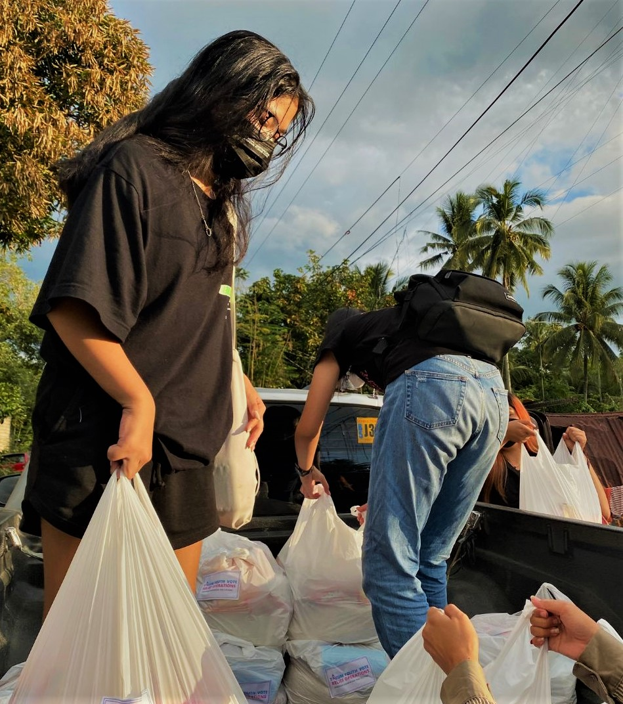
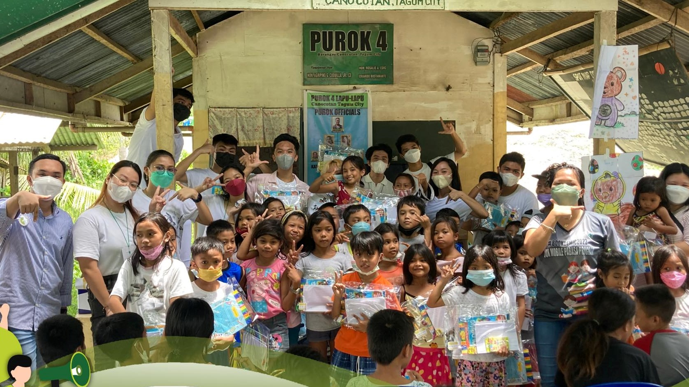
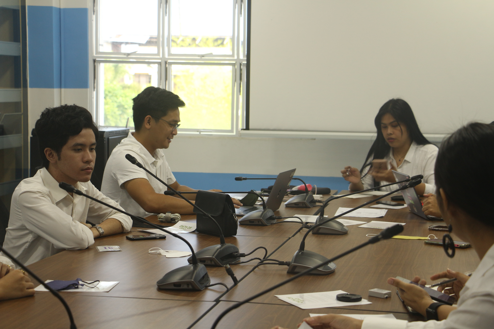
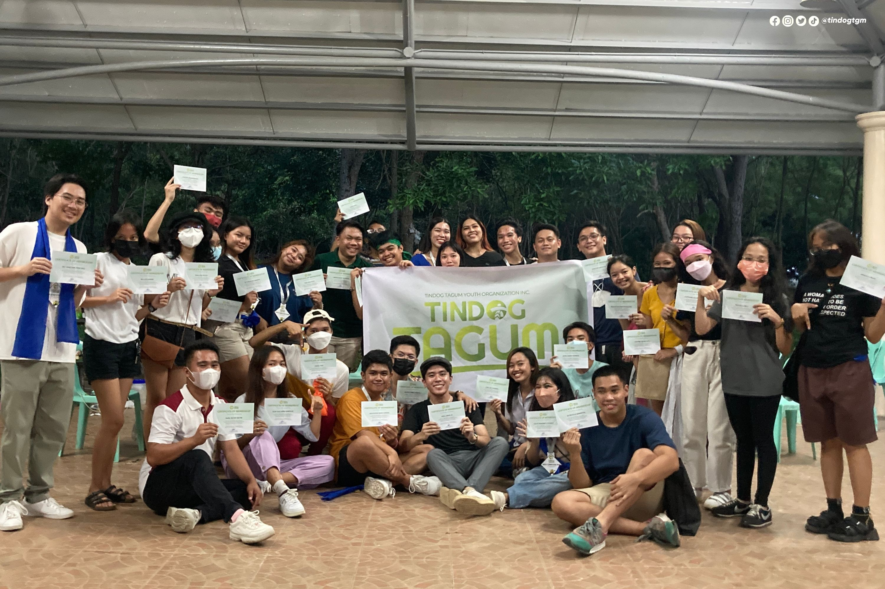
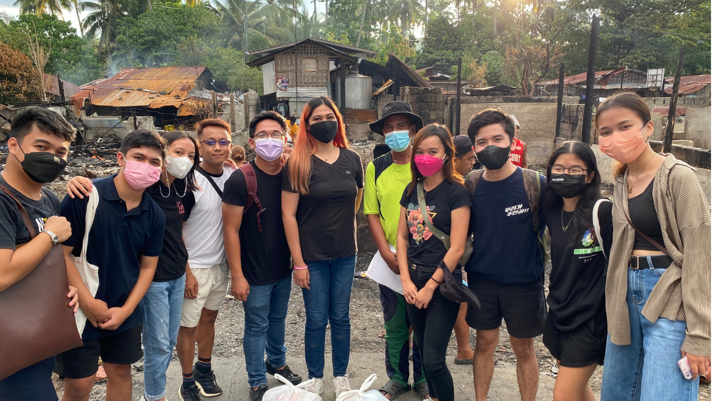

Relief Goods Distribution: Narisma Compound, Brgy. San Miguel
August 28, 2022
Our youth leaders would like to extend their deepest gratitude to all the members
who participated with the organization's Acceptance Ceremony last August 6, 2022 at
Energy Park, Tagum City.


Book Mobile Event and Feeding Program
September 25, 2022
Tindog Tagum Youth Organization Inc. is deeply grateful for
the success of the recently conducted Book Mobile Event and Feeding Program for
more than 50 children, this morning of September 25, 2022 at Barangay Canocotan,
Tagum City, Davao Del Norte.
Just a month after its formal founding, Tindog Tagum successfully organized
their first ever community engagement event with the help of partners, donors, and sponsors.
The organization would also like to acknowledge the efforts of our Department Heads, Assistant
Heads, and other officers who worked hard despite busy schedules to ensure the success of the event.
And to our members, who gave their time and skills without expecting anything in return.
MAJOR SPONSOR: Nanay Nicolasa Diaz Alvarez Foundation Inc.
IN COLLABORATION WITH: Tagum City Library and Learning Commons
Muli, kabataan, tanggapin ang hamon ng panahon. Pagsilbihan ang mamamayan.
Educational Discussion: The Political Spectrum
September 10, 2022
Tindog Tagum members convene in the organization's
first educational discussion regarding existing political ideologies and the
political spectrum.
It was spearheaded by our guest speaker, VP for Internal Affairs, Mr. Jezreyll James E.
Cabasag with the assistance of Mr. Septrin Calamba. The participants gained a wide range
of insights on the left-leaning, centered, and right-leaning political ideologies of the spectrum
and its impact on the community, especially the everyday Filipino.
Tindog Tagum extends its heartfelt gratitude to the members who attended today’s
discussion. As youth, navigating our participation in the political spectrum gears us
with the awareness we need to be wise and competent citizens.

Tindog Tagum Executive Board Oath Taking Ceremony
August 28, 2022
Last August 28, 2022, Tindog Tagum Executive Board
convened for their first organizational meeting and Oath Taking Ceremony.
The officers also finalized the organization’s calendar of activities for
the next six months and a strategic plan to ensure sustainability of the
organization’s flagship programs. We are excited with the organization’s
future plans and activities.
Serve the people. Serve the community.

Tindog Tagum Youth Member's
Acceptance Ceremony
August 6, 2022
Our youth leaders would like to extend their deepest
gratitude to all the members who participated with the organization's Acceptance
Ceremony last August 6, 2022 at Energy Park, Tagum City.
We hope that this is only the beginning and we will see you again as we
sustain the organization along with serving the community.
Kabataan, Padayon!

Relief Goods Distribution: Narisma Compound, Brgy. San Miguel
June 24, 2022
Our youth volunteers distributed relief packs for the victims of the Narisma Compound, Brgy. San Miguel fire incident.
The organization would like to extend our deepest gratitude to all who helped through monetary donations and made the relief operation possible.
Muli, kabataan pag-asa ng bayan, hamon sa atin ang pagsilbihan ang mamamayan.
How to get involved?
Fill up the registration and learn more about Tindog Tagum!